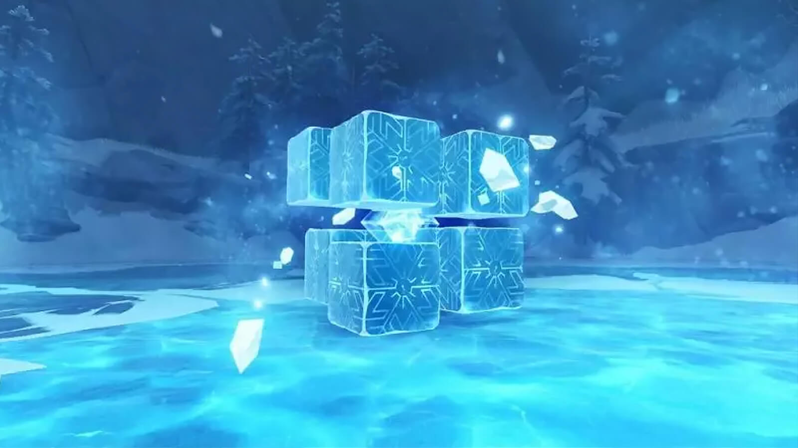

Крио Папоротник
За победу в поединке вы получите предметы, необходимые для возвышения персонажей. Например, с него падает Осколок нефрита Шивада (который также можно получить и с Волка Севера, или в ювелирной лавке), Фрагмент нефритового Шивада (падает с Крио Папоротника 40+ уровня, с Северного Волка 40+ и можно купить у алхимика), и еще несколько материалов

Пиро Орхидея
В голову цветка попадать проблематично, поэтому стоит сосредоточиться именно на нижней части Орхидеи. Если увидите, что растение начинает присматриваться к персонажу и трясти цветком как на скриншоте выше, это значит, что он сейчас ударит по полу, а вам надо сделать рывок в сторону. Продолжайте бегать вокруг Орхидеи и наносить урон.
Волчий Лорд Андриус
Волчий Лорд Андриус или Лупус Бореалис в Genshin Impact – еженедельный босс, что находится в открытом мире, в Мондштадте. Обладает стихиями Крио и Анемо. По лору игры он является одним из Хранителей Четырех Ветров Мондштадта, которому Барбатос поручил охранять регион.

Крио-Гипоастазис
Крио Гипостазис — элитный босс в регионе Мондштадт , расположен в западной части Драконьего хребта. Он имеет вид большого куба со светящимся ядром в центре. Если наносить удары, в момент когда босс закрыт четырьмя кубами, урон по нему проходить не будет, нужно выждать нужный момент, когда его ядро не будет защищено и тогда наносить удары
Электро-Гипоазис
Электро ловушка. Гипостазис выпускает в небо кубы, которые позже становятся столбами и окружают героя. Можно избежать попадания в ловушку, для этого необходимо просто выбежать из зоны клетки и начать атаковать ядро. Но если все-таки попались, то сломайте любой столб, так клетка разрушится.
Гео-гепоастазис
>Гео гипостазис обладает низкими резистами (10% макс.), поэтому нет особой разницы как наносить ему дамаг (исключая Гео стихию), просто берите персонажа с наибольшим уроном. Так как босс большую часть времени находится на колоннах, первостепенной задачей становится их разрушение. Прочность этих объектов схожа с Гео щитом лавачурлов. Так, чтобы сломать их, лучше всего использовать двуручные мечи. Любой персонаж с оружием этого типа отлично подойдет на роль — наносимый урон значения не имеет:
Бэй Доу;